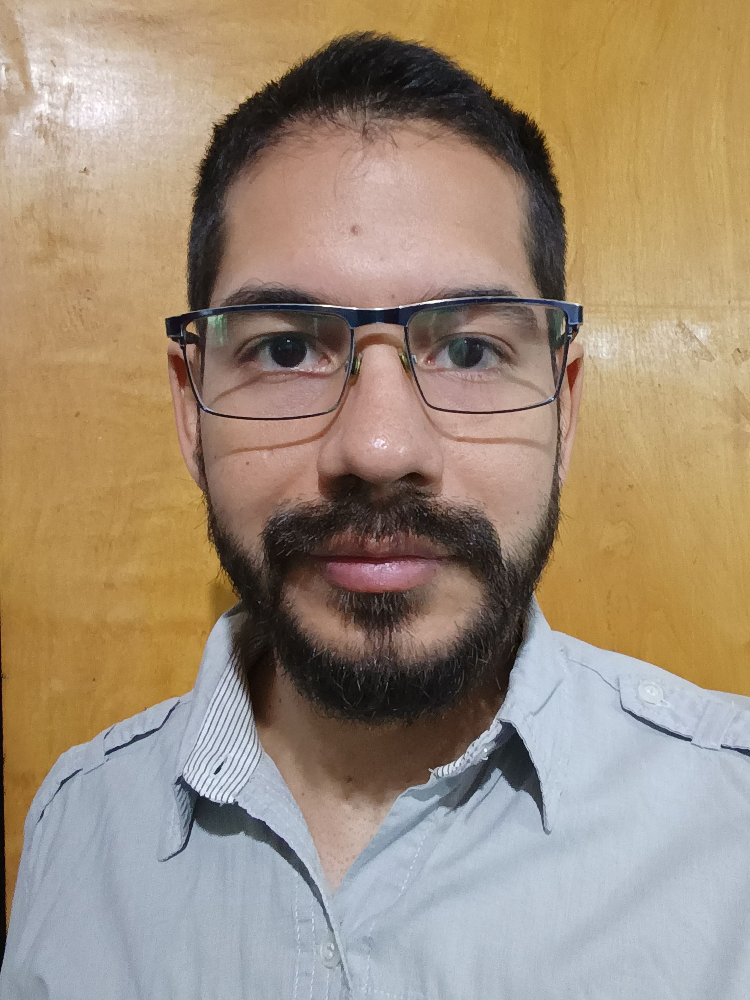
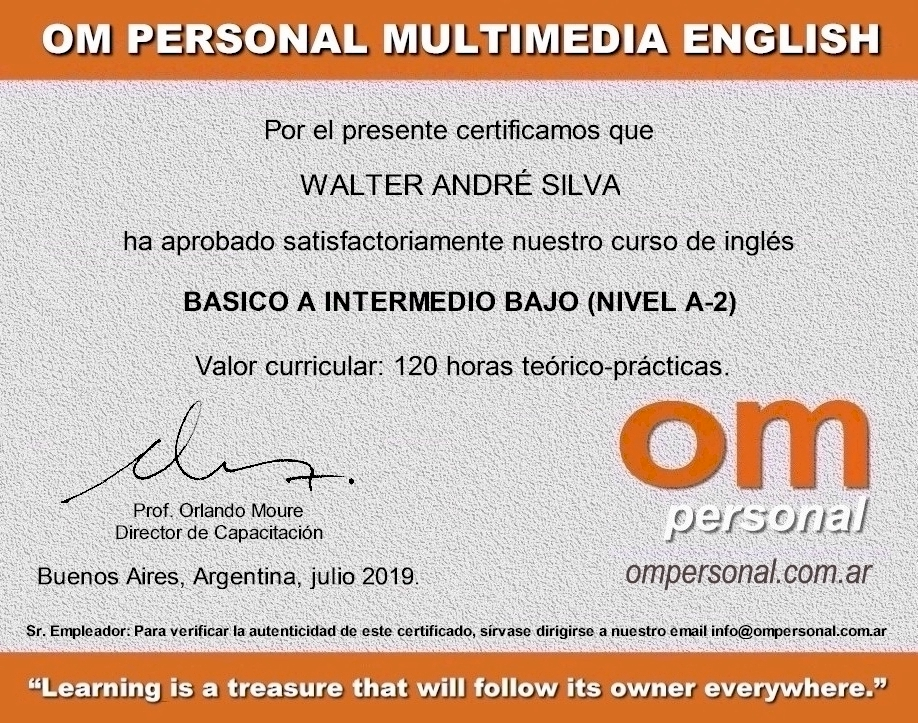
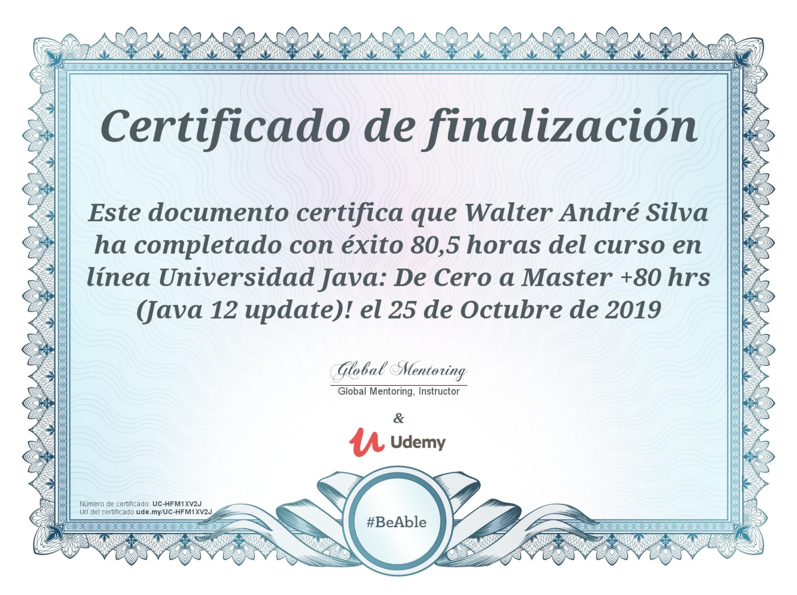
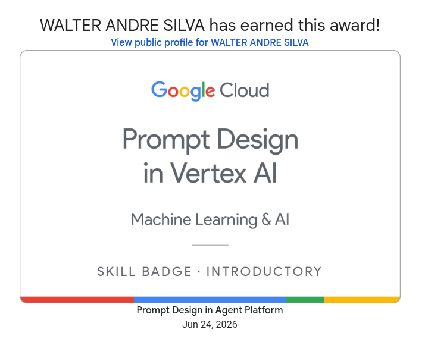

Bienvenido, querido lector, a un paseo por nuevas ideas y un sinfín de posibilidades digitales.
Novedades
Dao Game
¿Buscan un desafío rápido y elegante para su próxima reunión? Anímense a probar Dao, un juego de pura estrategia donde cada movimiento cuenta y la astucia los mantendrá al borde del asiento. ¡Reúnan a sus amigos y demuestren quién es el verdadero maestro del tablero!
Ir al juego Dao
Breve resumen de mi perfil profesional y trayectoria académica en el ámbito tecnológico.
Sobre Mí
Desde muy joven, me ha apasionado construir y crear objetos a partir de estructuras existentes. Al descubrir el mundo de la computación, comprendí que podía llevar esta vocación a otro nivel; el desarrollo de software se convirtió en un interés profundo al cual he dedicado incontables horas. Mi naturaleza autodidacta y mi inclinación por la resolución de problemas han sido los pilares de mi formación. En la actual era de la información, el avance de la inteligencia artificial potencia aún más mi capacidad para innovar y crear soluciones.

Estudios Universitarios
Obtuve el título de Analista en Computación en la Facultad de Matemática, Astronomía, Física y Computación (FaMAF-UNC), donde actualmente me encuentro cursando el tramo final de la Licenciatura en Ciencias de la Computación. Durante mi formación, seleccioné las materias optativas de Computación Paralela y Redes Neuronales, áreas que considero fundamentales en el panorama actual de la informática.
Cursos
Previo al inicio de mi formación universitaria, realicé cursos de Java en Udemy y clases de inglés en OM Personal. Durante mi carrera, asistí a charlas sobre Software Libre y Ciberseguridad. Aunque sigo perfeccionando mi nivel de inglés con práctica constante, actualmente continúo mi formación técnica a través de cursos en Google Skills.
Ir al CredlyCertificados



En esta sección agrego algunos proyectos que he desarrollado con el paso del tiempo. Muchos los realicé solo con el propósito de aprender alguna tecnología en particular o algún lenguaje de programación. Los invito a que los utilicen y los difundan si les parecen útiles.
Proyectos Destacados
Proyecto Final de Graduación
C / OpenGL / LinuxVisualizador de RAM en tiempo real para el análisis y comprensión de la gestión de páginas de memoria.
Animación en Raspberry Pi
AssemblyEsta aplicación fue desarrollada para la cátedra de Organización del Computador (FaMAF-UNC). El objetivo principal del proyecto fue simular un entorno 3D mediante la manipulación de colores en una textura 2D.
Atrapa a los Ladrones
GodotJuego desarrollado durante la pandemia para aprender a usar Godot, una herramienta de desarrollo de videojuegos.